東京大学 2019年 理科 第5問
問題
以下の問いに答えよ。
(1) nを1以上の整数とする。xについての方程式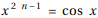は、ただ1つの実数解 をもつことを示せ。
をもつことを示せ。
(2) (1)で定まる に対し、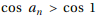を示せ。
に対し、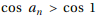を示せ。
(3) (1)で定まる数列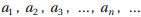に対し、
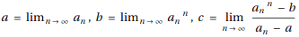
を求めよ。
解答
(1)
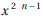とcos xはどちらも連続関数。
x<-1のとき、-1≤cos x≤1で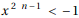なのでこの範囲に実数解はない。
-1≤x≤0のとき、cos xと はともに単調増加で
はともに単調増加で
x=-1のときcos x>0で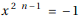、
x=0のときcos x=1で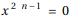だから、
-1≤x≤0で常に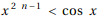が成り立ち、従って実数解はない。
0<x<1のとき、cos xは狭義単調減少では狭義単調増加。
x=0のときcos x=1で、
x=1のときcos x<1、 だから、この範囲にただ1つの実数解を持つ。
だから、この範囲にただ1つの実数解を持つ。
1≤xのとき、-1≤cos x≤1で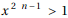だから、この範囲に実数解はない。
以上よりは0<x<1の範囲にただ1つの実数解 を持つ。
を持つ。
(2)
(1)より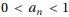であり、0<x<πにおいてcos xは単調減少だから、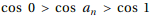。
よって題意は示された。
(3)
(2)の結果から、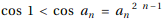だから、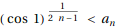。
0<cos 1<1だから、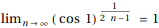。
よってはさみうちの原理により、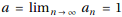。
 より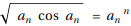。
より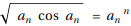。
よって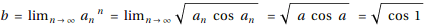。
次に、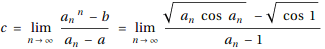。
ここで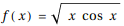を考えると、微分の定義から
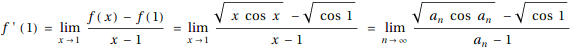
よってc=f'(1)であり、微分を計算すると、
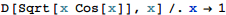
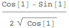
以上をまとめて、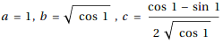
補足・感想
これはほぼ人間の解答になってしまった。Mathematicaは微分を1回計算しただけ。